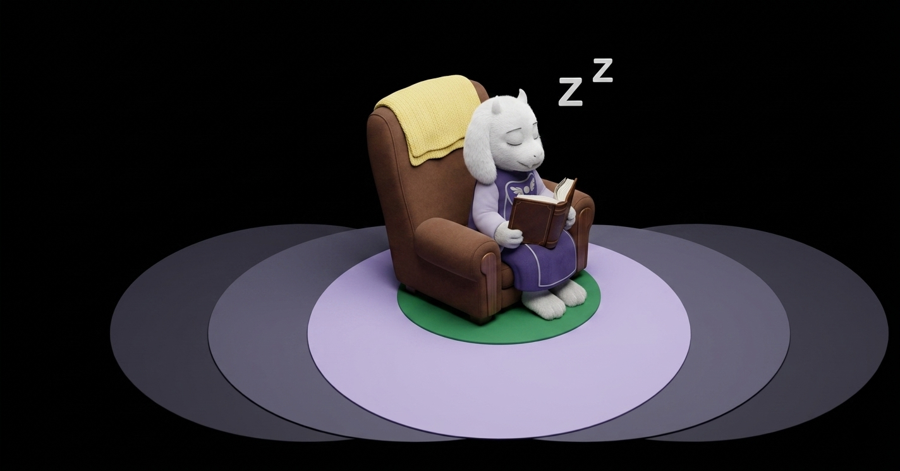

UNDERTALE
Undertale é um jogo de RPG criado por Toby Fox. A história acompanha um humano que cai em um mundo subterrâneo habitado por monstros. Durante a aventura o jogador pode escolher entre lutar ou resolver os conflitos de outras maneiras. jogo é conhecido por seus personagens marcantes, sua trilha sonora e suas escolhasque podem mudar a história.
